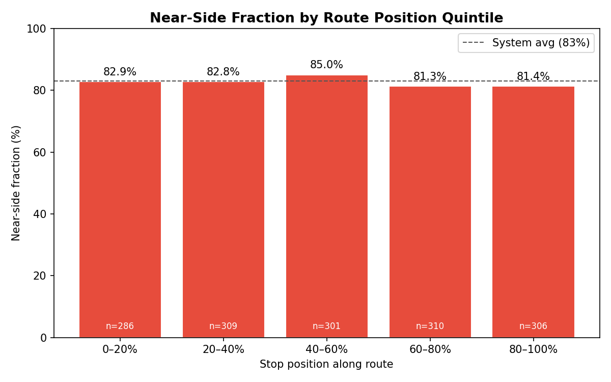
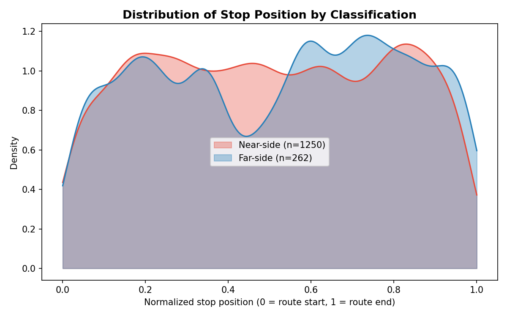
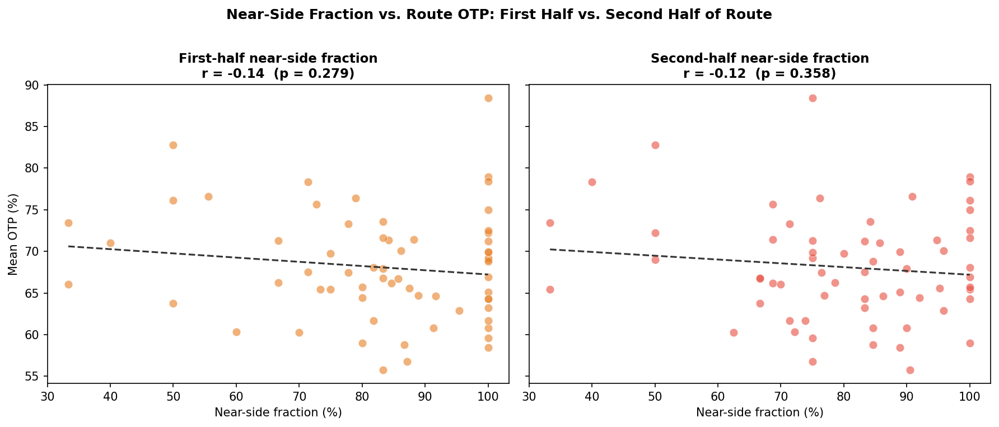

Analysis
54 - Stop Position and Near-Side Placement
Coverage: 2019-01 to 2025-11 (from otp_monthly).
Built 2026-06-05 17:39 UTC · Commit 1196b7f
Page Navigation
Analysis Navigation
Data Provenance
flowchart LR
54_stop_position_placement(["54 - Stop Position and Near-Side Placement"])
f1_54_stop_position_placement[/"data/GTFS/stop_times.txt"/] --> 54_stop_position_placement
f2_54_stop_position_placement[/"data/GTFS/trips.txt"/] --> 54_stop_position_placement
f3_54_stop_position_placement[/"analyses/53_stop_signal_placement/output/stop_classifications.csv"/] --> 54_stop_position_placement
t_otp_monthly[("otp_monthly")] --> 54_stop_position_placement
01_data_ingestion[["Data Ingestion"]] --> t_otp_monthly
u1_01_data_ingestion[/"data/routes_by_month.csv"/] --> 01_data_ingestion
u2_01_data_ingestion[/"data/PRT_Current_Routes_Full_System_de0e48fcbed24ebc8b0d933e47b56682.csv"/] --> 01_data_ingestion
u3_01_data_ingestion[/"data/Transit_stops_(current)_by_route_e040ee029227468ebf9d217402a82fa9.csv"/] --> 01_data_ingestion
u4_01_data_ingestion[/"data/PRT_Stop_Reference_Lookup_Table.csv"/] --> 01_data_ingestion
u5_01_data_ingestion[/"data/average-ridership/12bb84ed-397e-435c-8d1b-8ce543108698.csv"/] --> 01_data_ingestion
d1_54_stop_position_placement(("analyses/53_stop_signal_placement (lib)")) --> 54_stop_position_placement
classDef page fill:#dbeafe,stroke:#1d4ed8,color:#1e3a8a,stroke-width:2px;
classDef table fill:#ecfeff,stroke:#0e7490,color:#164e63;
classDef dep fill:#fff7ed,stroke:#c2410c,color:#7c2d12,stroke-dasharray: 4 2;
classDef file fill:#eef2ff,stroke:#6366f1,color:#3730a3;
classDef api fill:#f0fdf4,stroke:#16a34a,color:#14532d;
classDef pipeline fill:#f5f3ff,stroke:#7c3aed,color:#4c1d95;
class 54_stop_position_placement page;
class t_otp_monthly table;
class d1_54_stop_position_placement dep;
class f1_54_stop_position_placement,f2_54_stop_position_placement,f3_54_stop_position_placement,u1_01_data_ingestion,u2_01_data_ingestion,u3_01_data_ingestion,u4_01_data_ingestion,u5_01_data_ingestion file;
class 01_data_ingestion pipeline;
Findings
Findings: Stop Position and Near-Side Placement
Summary
Near-side stop placement is uniformly distributed along PRT routes — it is just as common at the start, middle, and end of a route. The near-side fraction is virtually flat across all five position quintiles (81–85%, all within 4 pp of the 83% system average), and a logistic regression of classification on normalized position yields a negligible coefficient (−0.27, close to zero on the log-odds scale). Splitting routes into first-half and second-half near-side fractions does not improve the OTP correlation: both halves give r ≈ −0.12 to −0.14, no better than the overall near-side fraction from Analysis 53. Position along the route is not a meaningful moderator of the near-side/OTP relationship.
Key Numbers
- 1,512 stops matched to position data (near_side + far_side from Analysis 53).
- Near-side fraction by quintile: 82.9% / 82.8% / 85.0% / 81.3% / 81.4% — range of only 3.7 pp, no systematic trend.
- Logistic regression coefficient on normalized position: −0.27 (near-zero; the model predicts essentially the same near-side probability at every point).
- OTP correlations: overall r = −0.13, first-half r = −0.12, second-half r = −0.12. None significant (all p > 0.29, n = 63–64 routes).
- KDE of stop position: near-side and far-side stops have nearly identical distributions along the route — both roughly uniform with shallow humps near the 20% and 80% marks.
Observations
- No position gradient in near-side placement. The hypothesis that PRT might have more far-side stops near terminals (where planners have more right-of-way flexibility) or more near-side stops in the busy middle of routes is not supported. Near-side is the default at every position.
- Second-half placement is no better an OTP predictor than first-half. The delay-accumulation argument — that a near-side stop at position 0.9 costs more than one at 0.1 — is theoretically sound but not detectable at the route level with the data available. The likely reason is the same as in Analysis 53: with 80–100% near-side fraction everywhere on most routes, there is simply not enough variance between routes for either half to explain OTP.
- Far-side stops have a mild second-half lean. The KDE shows far-side stops slightly more concentrated in the 60–90% position range, while near-side stops are modestly more concentrated in the 10–40% range. The difference is subtle and not large enough to affect the quintile percentages, but it is consistent with the hypothesis that stops converted or planned as far-side tend to appear on the outbound half of routes where intersection geometry allows it.
Discussion
This analysis closes the position-moderation question: knowing where along a route a near-side stop sits does not add predictive power beyond knowing the overall near-side fraction. The fundamental constraint from Analysis 53 remains binding — near-side is so dominant (83% system-wide, 80–100% on most individual routes) that there is very little cross-route variance to correlate with anything.
The underlying issue is range restriction: to detect a correlation between near-side fraction and OTP, you need meaningful variance in near-side fraction. Most routes cluster at 85–100%, so comparisons are effectively near-side-heavy vs. slightly-less-near-side-heavy rather than near-side vs. far-side. This is not evidence that near-side placement has no effect — it is evidence that the current network is too uniformly near-side for a route-level correlation to emerge.
The ideal test would be a within-system paired comparison: two otherwise identical stops at the same intersection, one near-side and one far-side, with stop-level arrival time data to directly compare delay contribution. That requires AVL logs or GTFS-RT archives, which are not in the current pipeline. A before/after study of a deliberate stop-relocation program would be the cleanest test of all.
Caveats
- Canonical trip only. Each stop is assigned to one canonical trip (longest shape for its shape_id). Position on other trips may differ slightly.
- OTP is route-level, not stop-level. The route OTP used here is the monthly average across all stops and all trips; it does not capture within- route delay accumulation patterns.
- Ecological framing. All correlations are route-level. No stop-level or rider-level causal claims are made.
Validation
- Data source verified. Classifications from
analyses/53_stop_signal_placement/output/stop_classifications.csv; stop sequences fromdata/GTFS/stop_times.txt. Position computation checked: the range of normalized position is [0, 1] and the quintile counts are approximately equal (286, 309, 301, 310, 306). - Null handling. 37 stops from Analysis 53 had no
stop_timesmatch after joining on shape_id + stop_id; these are silently dropped (inner join). - Flat quintile chart inspected. The near-constant bars (81–85%) are consistent with a near-uniform distribution confirmed by the KDE. A systematic gradient of ≥5 pp would have been flagged for investigation.
- Direction of logistic coefficient. The coefficient (−0.27) indicates slightly fewer near-side stops toward the end of routes, consistent with the mild far-side lean seen in the KDE second half. Sign is as expected from the KDE; magnitude is too small to be operationally significant.
Output

near-side fraction by route-position quintile.

density of near-side stop positions along the route.

first-half vs. second-half near-side fraction vs. OTP.
No interactive outputs declared.
per-route position and near-side summary.
Preview CSV
Methods
Methods: Stop Position and Near-Side Placement
Question
Does near-side vs. far-side stop placement vary by position along the route? And does the near-side fraction in the second half of a route — where delay has had more time to accumulate — predict route OTP better than the overall near-side fraction?
Approach
Step 1 — Assign normalized position to each classified stop
Join the stop classifications from Analysis 53 to stop_times via the stop's
canonical shape_id → trip_id mapping. For each stop on its canonical trip,
compute:
position = (stop_sequence − 1) / (max_stop_sequence − 1)
This gives a value in [0, 1] where 0 = first stop, 1 = last stop. Only near_side and far_side stops are included; mid-block and ambiguous are excluded.
Step 2 — Test for position gradient in near-side fraction
Bin stops into 5 equal-width position quintiles (0–20%, 20–40%, …, 80–100%) and compute the near-side fraction within each quintile. Plot as a bar chart. Run a logistic regression of classification (near_side = 1, far_side = 0) on normalized position to test whether position is a significant predictor.
Step 3 — Split-half OTP predictor comparison
For each route, compute:
ns_first_half: near-side fraction among stops with position < 0.5ns_second_half: near-side fraction among stops with position ≥ 0.5
Join to route mean OTP. Compare the Pearson r of each fraction with OTP
against the overall near-side fraction from Analysis 53. The hypothesis is that
ns_second_half is a stronger predictor because delay accumulates along the
route — a near-side stop near the terminus costs more in end-point OTP.
Step 4 — KDE of stop position by classification
Overlay kernel density estimates of normalized stop position for near-side and far-side stops to show whether the two classes cluster differently along routes.
Data
| Source | How used |
|---|---|
analyses/53_stop_signal_placement/output/stop_classifications.csv |
Classification + canonical shape_id |
data/GTFS/stop_times.txt |
stop_id → stop_sequence per trip |
data/GTFS/trips.txt |
trip_id → shape_id, route_id |
otp_monthly table in prt.db |
Route mean OTP |
Output
output/position_quintile_nearside.png— near-side fraction by route-position quintileoutput/position_kde.png— KDE of stop position by classificationoutput/splithalf_otp_comparison.png— first-half vs. second-half near-side fraction vs. OTPoutput/route_position_summary.csv— per-route ns_first_half, ns_second_half, ns_overall, mean_otp
Source Code
|
Sources
| Name | Type | Why It Matters | Owner | Freshness | Caveat |
|---|---|---|---|---|---|
| data/GTFS/stop_times.txt | file | GTFS stop sequence per trip. | Local project data owner not specified. | Snapshot file; refresh by rerunning its pipeline step. | May lag upstream source updates. |
| data/GTFS/trips.txt | file | GTFS shape-to-route mapping. | Local project data owner not specified. | Snapshot file; refresh by rerunning its pipeline step. | May lag upstream source updates. |
| analyses/53_stop_signal_placement/output/stop_classifications.csv | file | Per-stop near-side / far-side / mid-block classification from Analysis 53. | Local project data owner not specified. | Snapshot file; refresh by rerunning its pipeline step. | May lag upstream source updates. |
| otp_monthly | table | Primary analytical table used in this page's computations. | Produced by Data Ingestion. | Updated when the producing pipeline step is rerun. | Coverage depends on upstream source availability and ETL assumptions. |
Upstream sources (5)
|
|||||
| analyses/53_stop_signal_placement | dependency | Runtime dependency required for this page's pipeline or analysis code. | Open-source Python ecosystem maintainers. | Version pinned by project environment until dependency updates are applied. | Library updates may change behavior or defaults. |